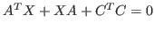
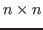
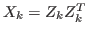
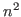
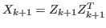
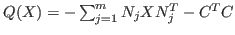
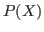
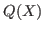
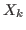
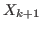

There has been a flurry of activity in recent years in the area of solution of matrix equations. In particular, a good understanding has been reached on how to approach the solution of large scale Lyapunov equations; see, e.g., [1]-[3]. An effective way to solve Lyapunov equations of the form

, where
, is to use Galerkin projection with appropriate extended or rational Krylov subspaces. These methods work in part because the solution is known to be symmetric positive definite with rapidly decreasing singular values, and therefore it can be approximated by a low rank matrix
. Thus the computations are performed usually with storage which is lower rank, i.e., much lower than order of
.Generalized Lyapunov equations have additional terms. In this paper, we concentrate on equations of the following form
In the present work, we propose a return to classical iterative methods, and consider instead stationary iterations, where the iterate

is the solution of
; cf. [6]. The classical theory of splittings applies here, while imposing certain conditions on
and
.One of the advantages of this classical approach is that only the data and the low-rank factors of the old and new iterates

and
need to be kept in storage. Furthermore, the solutions of the Lyapunov equations (
In our work, we developed a general srategy for augmented Krylov projection methods for
sequences of Lyapunov equations with converging right-hand sides, and we
apply it to the sequence
( ), whose solutions converge to the solution of
(
), whose solutions converge to the solution of
( ).
).
Numerical experiments show the competitiveness of the proposed approach.
This is joint work with Stephen D. Shank and Valeria Simoncini.